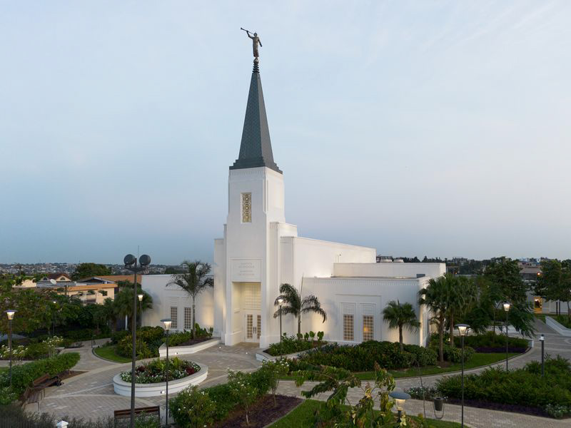

Temple Card - Abidjan Cote d'Ivoire

About the Temple
The Abidjan Côte d'Ivoire Temple is a temple of The Church of Jesus Christ of Latter-day Saints (LDS Church) located in Abidjan, Ivory Coast. It serves members of the LDS Church in the region and is a place of worship and spiritual learning.
The temple was announced on April 3, 2016, and its groundbreaking ceremony took place on October 19, 2019. The temple's design reflects the cultural and architectural heritage of the region, incorporating elements that resonate with the local community.
Dedicated 25 May 2025: Abidjan Côte d'Ivoire Temple
Visiting Information
- Location: Lot 118 Riviera Attoban Cocody, Abidjan Cote d'Ivoire
- Temple Hours: Check ordinance schedule
- Phone: +225 25 22 01 8010
- Housing: Available